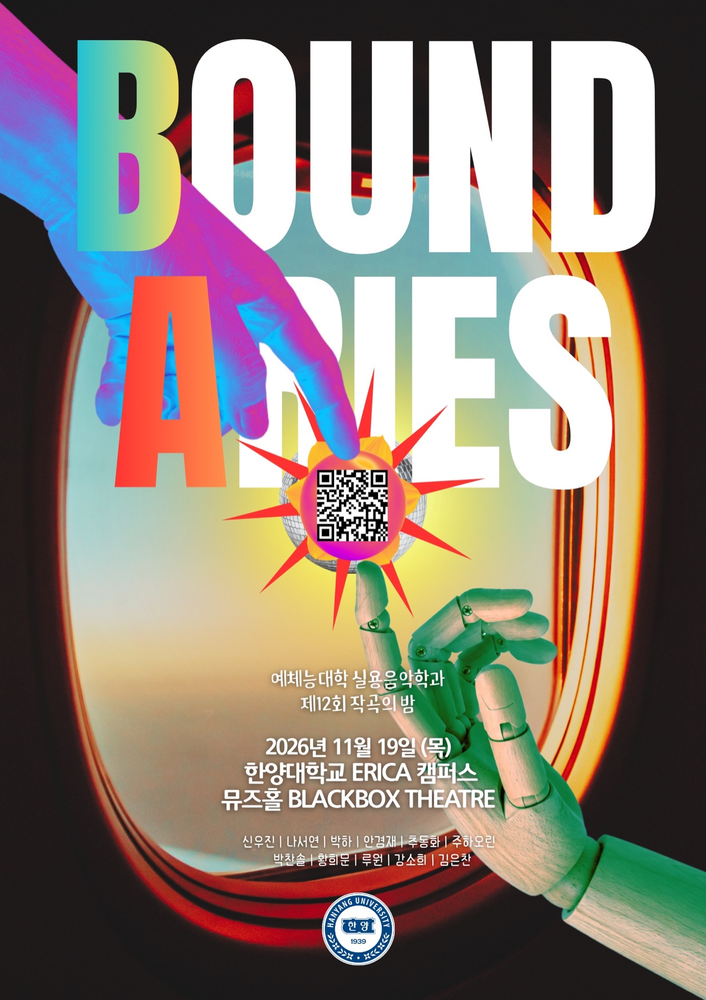

1.
CAPTIWALL
by 신우진
LIVE · 신우진
사람과 사람 사이의 경계가 점차 강해지고 충돌하면서, 결국 혼돈과 고립으로 이어지는 현대 사회의 모습을 비정형적이고 실험적인 사운드로 표현합니다.

THE 12TH COMPOSER’S NIGHT
by 신우진
LIVE · 신우진
사람과 사람 사이의 경계가 점차 강해지고 충돌하면서, 결국 혼돈과 고립으로 이어지는 현대 사회의 모습을 비정형적이고 실험적인 사운드로 표현합니다.
by 비둘기22 (박하 & 나서연)
D-신지민 B-신현수 G-김성현 P1-박하 P2-이진솔 V-이도연, 권이삭
“진정한 삶과 죽음은 무엇인가에 대한 질문에서 시작한 고찰. 우리가 내린 정의는 진정한 삶과 죽음은 육체적으로 오는 것이 아닌 마음에서 일어나는 것이다.”
by 추동화, 안겸재
LIVE · 안겸재 V-권지환
한 사람 안에 공존하는 모범생과 문제아의 상반된 모습을 주제로, 특정한 상대를 만나면서 억눌렸던 충동적이고 자유로운 본성이 드러나는 과정을 표현한 곡입니다.
by 어른이들 (박찬솔)
D-신지민 B-신현수 G-김성현 P-박찬솔 V-신정원
“우리는 언제부터 어른이 되었을까?”라는 질문을 통해 어른이 되어서도 마음속에 남아 있는 아이의 모습과 성장의 과정을 담은 곡.
by 주하오린
D-신지민 B-신현수 G-김성현 P-이진솔
《잔상》은 ‘경계의 모호함’을 주제로, 현실의 균열 속으로 꿈이 스며들어 하나로 융합되는 과정을 담았습니다. “지금 우리가 느끼고 있는 것은 과연 현실일까요, 아니면 꿈일까요?”
by 황희문
D-신지민 B-신현수 G-김성현 P-박찬솔 V-서은
익숙한 신스팝에서 출발해 실험적인 전자 사운드로 확장되는 곡으로, 익숙함과 낯섦 사이에서 새로운 시작을 마주하는 과정을 표현했습니다.
by 루원
D-신지민 B-신현수 G-김성현 P-이진솔 V-루원
“지나간 순간은 사라져도, 그 순간이 남긴 감정은 영원히 머물 수 있다는 이야기를 담은 곡입니다.”
by 강소희
D-신지민 B-신현수 G-김성현 P-이진솔 V-프란 윤민석
“우정과 사랑 사이, 우리는 언제부터 서로를 다르게 느끼기 시작했을까?”라는 질문에서 출발한 곡. 거창한 사건이 아닌 스치는 1초의 정적과 작은 떨림만으로도 무너지는 마음의 경계, 그 아슬아슬한 순간을 짧은 알앤비 사운드로 담아냈습니다.
by 김은찬
D-신지민 B-신현수 G-김성현 P-박찬솔 V-서은
경계란 좋고 나쁨을 구분짓는 선이 아니라 질서를 만드는 선입니다.
THE 12TH COMPOSER’S NIGHT
한양대학교 예체능대학 실용음악학과